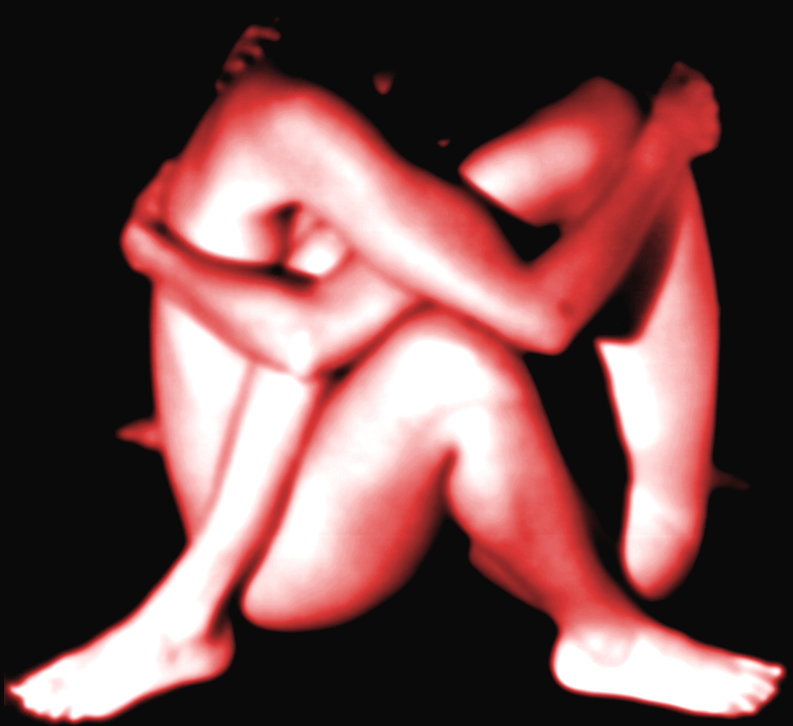
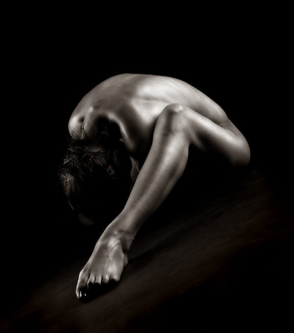
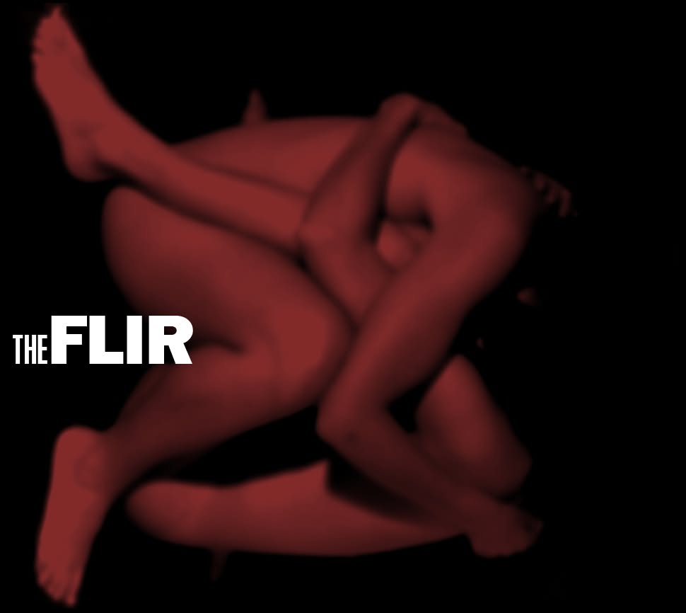
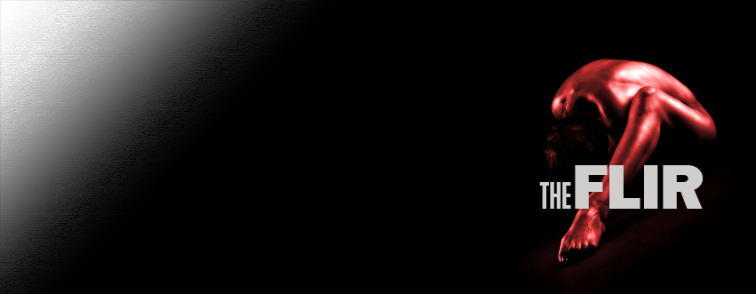

The band's oldest and most consistent visual thread. There is no single trade name for it; the closest description is a low-key chiaroscuro figure study — tenebrism applied to the human form. The body is folded, turned or contorted until it reads as a shape rather than a person, lit by one hard raking source, and everything outside that light falls to pure black.
Lineage: Bill Brandt's Perspective of Nudes, Ruth Bernhard, Edward Weston's abstracted forms. It is the reason the covers, the Facebook art and the reference folder all read as the same band across twenty years.




True black, --flir-black. Not dark grey, not a gradient. The figure emerges from it — no visible cut-out edge, no silhouette against a lighter panel.
One hard source, raking across the form. The highlight draws the contour; the shadow does the cropping. No fill, no second source, no rim light on both sides.
Folded, curled, inverted or contorted so the body abstracts into a form. The pose is the subject — a straight standing figure is not this treatment.
Concealed, turned away, obscured by hair, or cropped out. This is a study of a form, not a portrait. Anonymity is the rule, not a preference.
Nude or near-nude, non-explicit. Suggestion over display: what the light does not reach is not there.
The figure sits off-centre, held to one corner or edge, with a large empty black field opposite it. That field is where the wordmark and type live.
Keep it. Film grain and sensor noise in the shadows are part of the texture — do not denoise to clean.
The default. --flir-photo-filter-figure: grayscale, contrast 1.28, brightness 0.82. Crushes the shadows to black and holds the highlight on the skin.
The heat state, used on covers and release art. Grayscale first, then --flir-red at multiply over --flir-red-dim at color. Black stays black; only the lit skin takes the red.
The name read literally: a thermal map. The lit core blows to white, falls through --flir-red, and dies to black at the edge. Produced as a Photoshop gradient map on --flir-heatmap-stops, not as a CSS filter — --flir-photo-filter-hot is only the screen approximation.
The wordmark is knock-out white and sits in the black field, never over lit skin. No rule, no box, no shadow behind it — the black is the container.